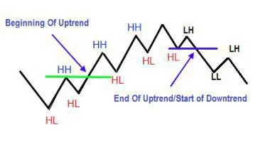
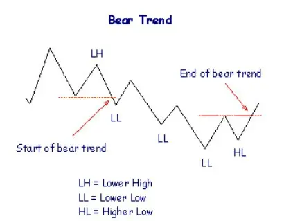
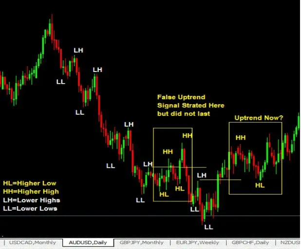
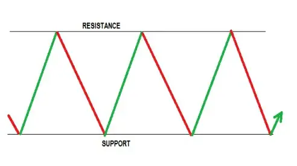
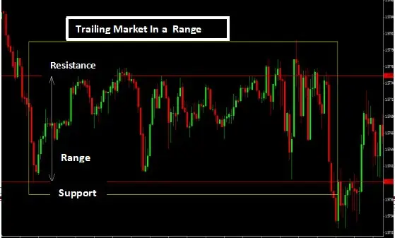

Trends are produced when pricing changes over time as a result of supply and demand. In this section, trends are
discussed in terms of their formation, variety, and organizational structure.
Because understanding what a trend is, the structure of a trend, and what signals to look for to tell you that a new
trend may be starting and a previous one is ending are essential knowledge for price action traders, it is important for
you to comprehend the structure of trends so you won't depend on any indicator to tell you whether the trend is up or
down.
And all you need to know about a trend's direction, whether, up, down, or sideways—is from price action.
There are three different types of trends, as I just said. A trend is, to put it simply, when the price is either moving
up, down, or sideways.
1. Therefore, an uptrend is when the price is rising upward.
2. A downward price trend is referred to as a downtrend.
3. Price movement that is sideways is referred to as a sideways trend.
Now, each of these three trend types has a distinctive pricing structure that indicates whether the market is moving
up, down, or sideways.
The Dow Theory is the source of these structures. But I'll give a quick explanation here.
Summary Of The Dow Theory Of Trends
In layman's words, the theory states that:
1. During an uptrend, prices will continue to make higher highs and lower lows until a higher low is encountered,
which marks the end of the upswing and the start of a downtrend.
2. When prices are in a downtrend, they will make lower highs and lower lows that are becoming lower all the time
until a lower low is intercepted, which ends the downtrend and starts an uptrend.
An Uptrend Structure in a (Bull) Market
Prices will be making higher highs (HH) and higher lows (HL) in an uptrending market (HL)
Dow Theory Trend Definition

Market Structure in an Downtrend (Bear)
Prices Will Form Lower Highs (LH) and Lower Lows (LL) A particularly ideal example is represented in the chart
below.

However, you are aware that the market actually looks more like the chart below than it does like the one above?

The price drops down during the initial downtrend seen in the chart above, which is followed by a false uptrend that
does not survive. Eventually, another uptrend develops as a result of the intersection of another lower high (which
signals end of downtrend).
This is how price action can be used to spot trends. You ought to be aware of this.
Because the market is imperfect when these trends are taking place, you need learn how to determine whether a
trend is still intact or whether it may be about to reverse. And the price basically intersects highs or lows.
A Sideways or Ranging Market's Structure
In a perfect world, price would be moving in a range between the support and resistance levels as indicated below
for a market that ranges.

However, what you see in the actual world is more like this and not as perfect as above!
